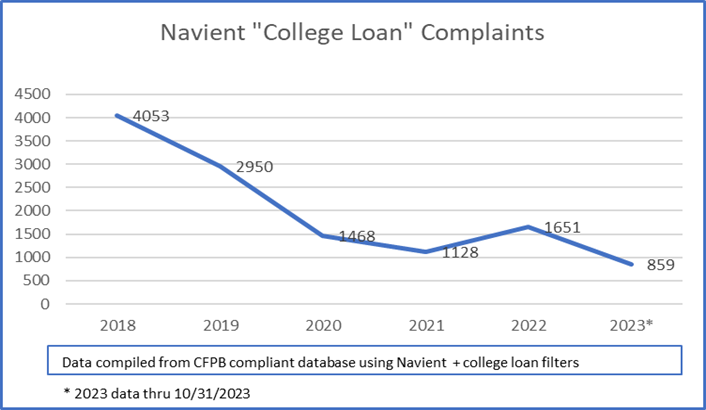

Over the last few years, Navient complaints about college loans have been steadily decreasing. In 2018, there were 4053 complaints. This had decreased by over half by the year 2020. This is likely due to the pandemic. Fewer students were applying for loans in 2020 and 2021 due to more students deciding to postpone their college plans or live at home. A small spike in complaints occurred in 2022. This may be due to the large influx of college freshmen. Many students who graduated in 2020 and 2021 were applying for loans at the same time as 2022 graduates.

Complaints are largely distributed in accordance with state population. California, Florida, and New York held the highest number of complaints. A large number of complaints come from the northeast and mid-atlantic regions. The number of complaints per capita is higher in the northeastern states compared to California, Texas, and Florida.